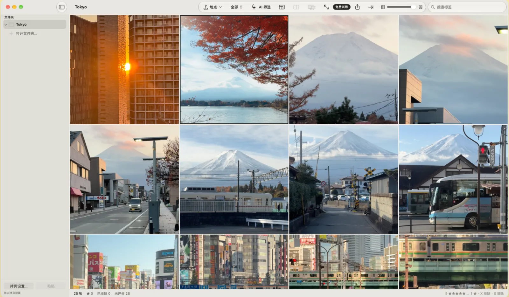

基于文件夹
Butter Edit 直接使用你现有的文件夹。无需复制，无需导入——打开文件夹即可开始。

就地打开文件夹
SD 卡、外置 SSD 或电脑上的任何文件夹都能直接打开。在 Mac 上，在“访达”中所做的更改也会立即显示。
编辑保存在照片旁的 XMP 中
评分、排除、颜色标签和关键词写入其他照片 App 也能读取的标准 XMP 字段。原图始终不变。
随插随用的硬盘
拔下硬盘后，文件夹会以“未连接”留在边栏中；重新插上即可继续，无需重启 App。
缩略图随硬盘走
缩略图缓存保存在照片所在硬盘的隐藏文件夹中，第二次打开即刻显示，换一台电脑也一样。可在设置中选择大小和位置。
提前生成预览
在后台为整个文件夹生成屏幕尺寸的预览，从当前照片开始，你操作时会自动暂停。
快速筛选
1–5 星、按 X 排除、6–9 设颜色标签、2–6 张并排比较、堆叠，并可按评分、标签、AI 精选或标签筛选。
按文件夹打开的快速 RAW 编辑器
免费下载，30 天内免费试用全部功能。需要 macOS 26 或更高版本。 Windows 需 10（64 位）或更高版本。